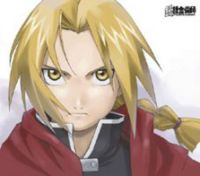

De: La Frikipedia, la enciclopedia extremadamente seria.
De: La Frikipedia, la enciclopedia extremadamente seria. De: La Frikipedia, la enciclopedia extremadamente seria.
| De la serie religiones del mundo: | |||
| Confucianismo | |||
| |||
| Creador | Confucio. | ||
| Profeta | Li Mu Bai. | ||
| Número de creyentes | Unos cuantos millones de pandas rojos | ||
| Dogmas fundamentales | Mejor no decir nada. | ||
| No se puede... | Fideos con mucho aceite. | ||
| Sí se debe... | Comer fideos con poco aceite. | ||
| Promesas principales | Que podrás fideos con poco aceite y arroz bajo en grasas. | ||
| Nivel de frikismo | Más alto que las calorías en una cucharada de arroz con poco aceite. | ||
| Máximo exponente | Li Mu Bai del tigre y el dragón. | ||
«Mi pueblo es muy noble por ejemplo un padre no duda en acusar a su hijo por sus crímenes »
~ Burócrata a Confuncio
«En el mío un padre comparte los crímenes con su hijo y viceversa, además se ayudan mutuamente para sobrellevar un fallido tráfico de drogas desde Melilla a Gibraltar»
~ Confucio enseñándole al burócrata sobre la piedad filial
El Confucianismo, a veces también llamado confucionismo por los iletrados y gente perezosa, es el conjunto de doctrinas morales y religiosas predicadas por Confucio, una persona muy peculiar a la que debemos respeto. El nombre en chino de su escuela podría ser traducido por escuela de los letrados o sea de la gente que sabe leer que no era mucha pero aun así garantizaba la estabilidad mental de la gente. El confucianismo ha ejercido una gran influencia sobre China, Corea, Vietnam y Japón por así decirlo aunque muchos monocrátas dirían que desde un principio todos ser humano tiene una pizca de confucionista por así decirlo pero a los funcionarios budistas les importo por así decirlo poco y nada.
Fue la religión oficial de China hasta el siglo VII. El canon de la filosofía confuciana lo componen los Cuatro libros los cuales mencionaremos después porque somos gente perezosa desgraciadamente. Su pensamiento se formó durante un largo período que abarca las épocas de Primaveras y Otoños y Reinos Combatientes (siglos VII al III a. C.). Cuando China fue reunificada por Qin Shi Huang (221 a. C.), ya era una doctrina perfectamente formada y definida, con muchos seguidores y un gran corpus textual. Luego de la breve dinastía Qin, su núcleo fundamental se ha mantenido intacto, excepto por posibles errores de transmisión e interpolaciones que sólo afectan lo accidental.
«Si el Emperador es un déspota hijo de puta que no respeta al pueblo entonces este tiene el poder de destituirlo o en el peor de los casos asesinarlo»
~ Mencio exclamando sus ideas
Como para la mayor parte de sus contemporáneos, los confucianos ven al cosmos como algo armónico que regula las estaciones, la vida animal, la vegetal y la humana. Si esta armonía era trastornada, habría graves consecuencias. Un ejemplo común que utiliza el confucianismo es el del mal gobernante que conduce a su pueblo a la ruina mediante su conducta.
«Todo empieza por casa»
~ Confucio sobre el buen gobierno y la educación
El mal gobierno contradiría el orden natural y viola el Mandato del Cielo. El gobernante que se conduce así pierde su legitimidad y puede ser depuesto por otro que recibirá este mandato. En este pequeño fragmento se puede denotar como siglos atrás ya se estaba gestando la filosofía práctica de la Revolución Francesa.
Estrictamente hablando no existe ninguna palabra de origen chino que pueda denominar a algo como Confucianismo. Los letrados usan las siguientes palabras para denominar a una invención no inventada por el Maestro Kong:
Se pusieron sus respectivas traducciones para promocionar los diccionarios de la línea Frikaso que tienen el aval de la prestigios Editorial Espasa que para quienes no sepan porque le tienen miedo al tipo de las librerías se dedican a imprimir diccionarios de forma legal no como nosotros que nos dedicamos al terrorismo literario.
Tres de estas palabras utilizan el carácter 儒 rú que significa Estudiante o persona cuya cabeza esta vacía producto de las drogas y los vídeo juegos cómo verán. Estás palabras bajo estricta pena de muerte no se utilizan frente a Confucio o en este caso su tumba ya que el ya lleva unos cuantos siglos hecho leche en polvo, sin embargo se pueden utilizar para designar a un estudiante del método confuciano pero a esto se le debe agregar los sufijos complejos jiā, jiào, and xué para determinar que se esta hablando del estudiante ideal confuciano y no generar conflictos con los ultra conservadores que a pesar de ser más peligrosos que un militante de un partido fascista se los puede ver saltando en un concierto de la banda The Band Apart con mucha alegría.
La palabra Rújiā contiene el carácter jiā que según nuestro diccionario poco elaborado significa casa o familia. En el contexto que le queremos hacer comprar esto formando una oración elaborada con mucho esfuerzo y dedicación podemos construir Escuela de Pensamiento como significado. Desde este momento varias escuelas filosoficas que han leído esto han empezado a construir nombres extravagantes con los garabatos que tienen por escritura siendo los contemporáneos confucianos los más extremistas en ponerle un jiā al final de cualquier frase relacionada con la legalidad y el Mohismo.
Rújiào y Kǒngjiào contienen el carácter jiào, el sustantivo enseñar, usado en términos como educación o educador. Este termino, sin embargo, es notable por su uso en la construcción de nombres para religiones o sectas sin sentido que podrían decirse que son una estupidez completamente pero el chino les da un tono de serenidad: las religiones como Cristianismo, Islamismo, Judaísmo, Budismo y Conchetumarismo entre otras terminan en jiào.
Rúxué contienen xué estudio. Este termino es paralelo al sufijo -logía en cristiano para designar campos académicos: en chino las palabras para biología, geología, putología, arqueología y demás terminan en xué.
Estas expresiones tienen más de un milenio y son como un puñetazo que el confucianismo dejo y sigue dejando a las generaciones actuales.
Tradicionalmente se pensó que Confuncio era el autor de estás porquerías o al menos edito algo de su contenido que sería considerado la base de esta cosa que estamos editando ahora. El estudiante Yao Xinzhong nos hace reflexionar sobre el hecho de haberse esforzado en escribir estos libros de auto ayuda pero los expertos dudan si será cierto que las versiones tempranas y traducidas respetan todo el contenido que el loco desalmado de Confucio quiso expresar. Aun así Yao decía que era mucho trabajo de pensamiento tratar de equiparar un verso filosófico con algín funcionamiento práctico frente a las verseadas intelectuales del Maestro lo que nos deja con una conclusión muy poco esperada: Ningún ser racional se ha animado a intervenir en los trabajos de Confucio en estos dos mil años que han pasado. Estos trabajos son la mirada de Confucio sobre el mundo y sus más osados delirios:
Los confucianos eran practicantes de un culto que giraba alrededor de la adoración a los antepasados y de poderes entre los cuales el Cielo era el más claro por que es azul, mejor dicho celeste o sea un color claro entre los colores por lo que no hay mucha complejidad en decir que es un color claro. El Señor de lo Alto (Shangdi), que es a veces mencionado, era algo más arcaico. Cuando aparece en los textos de los Cuatro Libros, el Cielo es un poder superior, que no está ni personalizado ni tan separado del mundo. No es algo pasivo, pues de él vienen los mandatos y acciones, pero no es un dios del tipo judeocristiano. El Señor de lo Alto aparece como una divinidad suprema en los huesos adivinatorios de la dinastía Zhou. Los textos confucianos, al remontarse a épocas de la Antigüedad, lo mencionan a veces pero eso no significa que deba someterse a un ente superior de hace unos cuantos milenios o eso se plantearon los filósofos confucionistas con la frase: sino lo podemos ver que joder.
El culto a los antepasados, gente muerta con la que tenemos relación sanguínea, tiene una gran importancia. Implica la creencia de que las almas de los difuntos pueden beneficiar o castigar a sus descendientes. Su evolución posterior lo convirtió en un rito cívico simbólico. Sin embargo, ni Confucio ni Mencio hablan de esa forma del culto a los antepasados. Otro elemento de importancia en el confucianismo es el rey o emperador, también llamado el Hijo del Cielo. Él sería quien mediaría entre el Cielo y los hombres. El gobernante chino tiene el mandato y con él la autoridad de celebrar ritos. Hecho que los comunistas trataron de eliminar y con la Revolución de cultural Confucio fue considerado infame hasta la muerte de Mao donde los nacionalistas moderados dijeron: pero si es chino que joder y así fue como se restableció el sistema de exámenes confucianos en las escuelas con el cual cuesta dos huevos y un ojo de la cara poder aprobarlos de manera efectiva sin embargo los chinos siguen siendo los más hijos de puta jamás encontrados, son unos hijos de puta de manera comprobada
Según el confucianismo, el hombre debe armonizarse con el cosmos, es decir, estar de acuerdo a lo ordenado por el Cielo aunque no quiera y prefiera ir a comer tierra. Para ello, debe autoperfeccionarse mediante la introspección y el estudio. Si el hombre lo logra, tendrá conocimiento de sí mismo y de los deseos del Cielo, lo que le servirá para desarrollar su Li, que significa los ritos, las ceremonias, la rectitud y las buenas formas interiorizadas. El Li es útil para desarrollar el Ren que se podría traducir por «buenos sentimientos hacia los demás hombres». La práctica del Ren supone las virtudes Zhong y Shu, que se traducen aproximadamente como lealtad y perdón, o como fidelidad y compasión. Si el hombre tiene Ren, podrá fácilmente practicar la justicia, los buenos principios, llamados Yi. En conclusión podrán entender lo que dos monosílabos mediocres simplifican en un camino rodeado de sufrimiento y adversidad donde quizás su novia deje de quererlo y probablemente pierda su trabajo llevándolo a ponerse en frente de un tren, ya que estos valores a la sociedad de hoy sinceramente le chupan un huevo por lo que le recomendamos no arriesgarse porque nos preocupamos por usted esa es una jodida mentira
En el confucianismo, Yi se opone a Li, siendo este último de diferente tono y grafía al Li anteriormente citado que significa ritos o ceremonia. El Li opuesto a Yi significa beneficio, ganancia, lo que supone alejamiento de la generosidad que exige Ren. El hombre que practica las anteriores virtudes es un Junzi, un hombre superior. El término viene de las clasificaciones jerárquicas que denotaban a los nobles y caballeros. Se opone a Shunin, los plebeyos. Sin embargo, en el confucianismo el término resalta superioridad moral, sin relación al origen social. El Junzi sería educado y justo, la (virtud) le sería inherente y siempre estaría en el Justo Medio, que indicaba la necesidad de moderación en todo. Además, el Junzi conoce y respeta los mandatos del Cielo, y conoce el propio.

El confucianismo nos sostiene que hay pocos hombres superiores y que la mayoría la conforman los Xiaoren, literalmente hombrecillos. Ellos son hombres vulgares que no se elevan a lo mejor de la humanidad. Debido a esto, el hombre superior tiene la misión de ocupar cargos públicos para poder dirigir a la sociedad. Este punto es importante ya que la burocracia de la China posterior llegó a identificarse mucho con esta idea, dando lugar a gran espíritu de servicio en las buenas épocas. Sin embargo, en los tiempos de decadencia, como pudieron verlo los europeos en el siglo XIX, era mayormente una doctrina seca e hipócrita, muy lejos de los pensamientos del confucianismo, lo cual es algo irónico, ya que los europeos fueron los que arruinaron a la civilización China completamente hasta llevarla a la plena destrucción.
El confucianismo hace una gran reflexión sobre los nombres, ya que según el orden de las cosas, los nombres deben ir de acuerdo a algo preestablecido que no conocemos pero que aun así hay que respetar bajo pena de fusilamiento. Los nombres no son algo que se debe tomar a la ligera pero para poder explicar esta situación daremos varios ejemplos porque somos muy perezosos para explicarlo de una manera breve y clara:
Digamos que hay un sujeto con cierto retardo mental que además de eso tiene Alzheimer por lo que al encontrarse con un oficial de policía que le pregunta su identidad, este responde con lo primero que se le viene a la cabeza: Popo de perro. Bueno popo de perro no es un nombre propio más bien parece un nombre aborigen americano que hace alusión a los desechos de un canino por lo que se podría decir que se esta usando de manera impropia un nombre, pena de fusilamiento al retardado.
Digamos que hay un travestido, no es usted siéntase aliviado, que decide llamarse mujer pero en cuanto alguien lo ve da a conocer su identidad por lo que vemos que hay un uso impropio de nombres, ya que las mujeres no son travestidos ni los travestidos son mujeres aunque te den miles de explicaciones jurídicas que nadie lee podremos decir hasta en chino que eso es un travestí o sujeto que opta por prendas femeninas por un fetiche hacia ellas o por un acto de liberación espiritual que socava el alma y la deja libre sin hacer frente a prejuicios. Fuera de todo sigue habiendo un problema de nombres por lo que podemos decir que al final vamos a tener que mandar a alguien más al paredón.
Después podríamos hablar de los narcotraficantes, guerrilleros de milicias comunistas de Colombia, de gente retardada y tu abuela porque desde ya sabemos que usan el sagrado nombre propio de manera impropia por lo que evaden al confucianismo, por lo tanto hacen llorar a Confucio, por lo tanto al paredón sin piedad alguna más que una fosa común.
Te proponemos un juego con los personajes prominentes del confucionismo o entre otras cosas. Para eso necesitaremos un dado. Una vez obtenido el dado cada jugador empieza con 100,000 puntos de vida y con un héroe previamente escogido el cual es la representación de tu vida o sea si el muere tú también. No es muy complicado a menos que usted sea un completo idiota. El dado tiene la función de designar un poder acorde al número que toque y este poder tiene un efecto que podrá o no ser decisivo en la derrota o victoria del competidor. Hay que tener en cuenta que hay que ser muy frikazo o un tipo con un trastorno producto de las cartas de YU-GI-OH! para jugar esto. Se recomienda jugarlo con amigos, familiares y gente a la que odies. Todo sea para divertirse!
| Imagen | Nombre chino / translation | Poder | Atributo | Ataques |
|---|---|---|---|---|
| 孔子 / Confucio | 31 ATK / 24 DEF | Confucionismo. |
| |
| 孟子 / Mencio | 28 ATK / 23 DEF | Confucionismo. |
| |
| 荀子 / Xun Zi | 18 ATK / 53 DEF | Confucionismo. |
| |
| 莊子 / Zhuang Zi | 38 ATK / 33 DEF | Taoísmo. |
| |
| 莊子 / Zhu Xi | 18 ATK / 53 DEF | Confucionismo. |
| |
|  | 墨子 / Mo-tzu | 28 ATK / 43 DEF | Moísmo. |
|

|
李斯 / Li Si | 34 ATK / 47 DEF | Legismo. |
|
| 韓非 / Han Fei | 44 ATK / 57 DEF | Legismo. |
| |

|
趙正 / Zhao Zheng | 102 ATK / 5 DEF | Legismo. |
|
No podemos recomendarle ningún héroe, ya que nuestros especialistas no son expertos en la materia pero le deseamos la mejor de las suertes en lo que sera una matanza indiscriminada entre entes importantes de la historia China.
Autor(es):